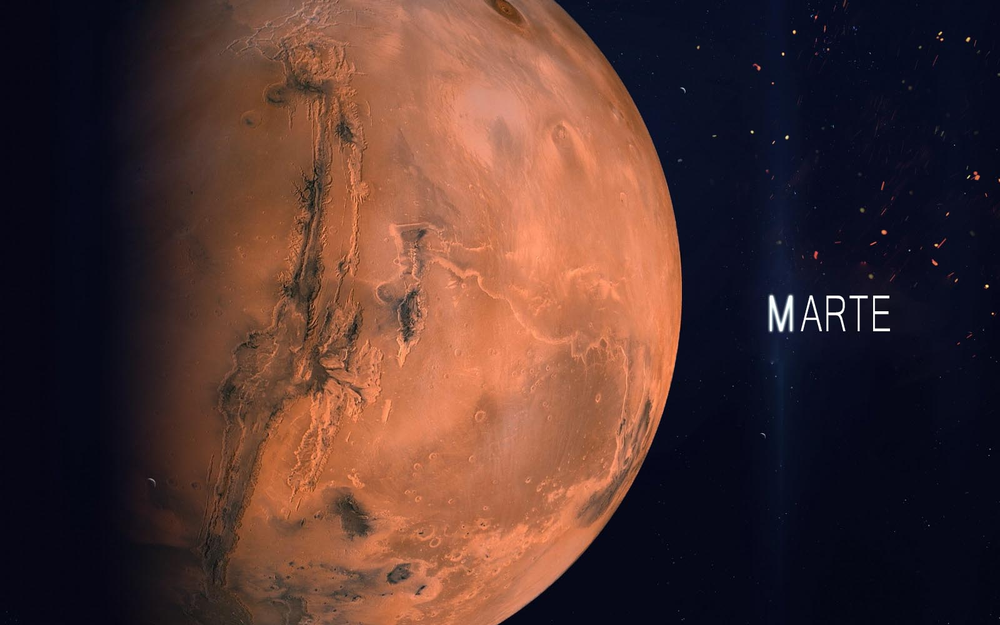
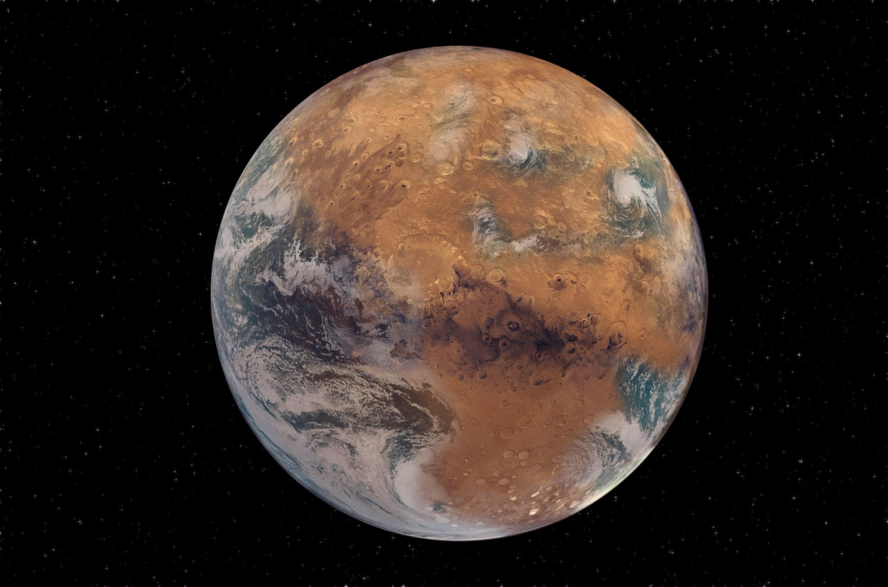

Marte
Marte é o quarto planeta a partir do Sol, o segundo menor do Sistema Solar. Batizado em homenagem ao deus romano da guerra, muitas vezes é descrito como o "Planeta Vermelho", porque o óxido de ferro predominante em sua superfície lhe dá uma aparência avermelhada. Marte é um planeta rochoso com uma atmosfera fina, com características de superfície que lembram tanto as crateras de impacto da Lua quanto vulcões, vales, desertos e calotas polares da Terra. O período de rotação e os ciclos sazonais de Marte são também semelhantes aos da Terra, assim como é a inclinação que produz as suas estações do ano. Marte é o lar do Monte Olimpo, a segunda montanha mais alta conhecida no Sistema Solar (a mais alta em um planeta), e do Valles Marineris, um desfiladeiro gigantesco. A suave Bacia Polar Norte, no hemisfério norte marciano, cobre cerca de 40% do planeta e pode ser uma enorme marca de impacto. Marte tem duas luas conhecidas, Fobos e Deimos, que são pequenas e de forma irregular. Estas luas podem ser asteroides capturados, semelhante ao 5261 Eureka, um asteroide troiano marciano.
Marte está sendo explorado por oito espaçonaves atualmente: seis em órbita — Mars Odyssey, Mars Express, Mars Reconnaissance Orbiter, Mars Atmosphere and Volatile Evolution Missile – MAVEN, Mars Orbiter Mission e ExoMars Trace Gas Orbiter — e duas na superfície — Mars Science Laboratory Curiosity, Perseverance e o rover chinês Zhurong, como também o lander InSight. Entre as espaçonaves desativadas que estão na superfície marciana estão a sonda Spirit e várias outras sondas e rovers, como a Phoenix, que completou sua missão em 2008, e o Opportunity.